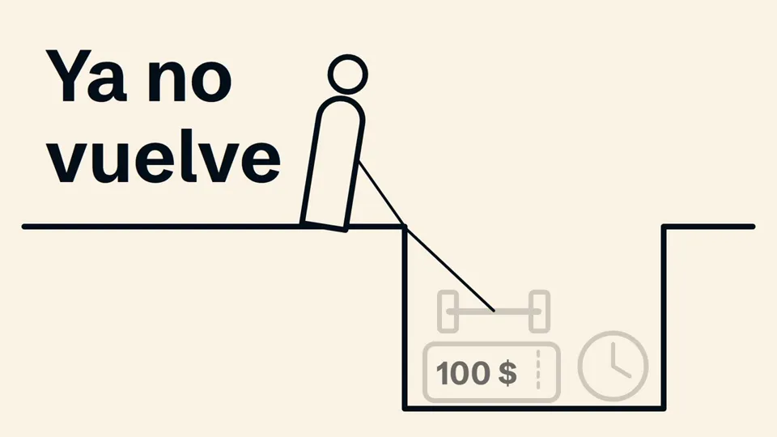

AmbiciónEpisodio 418 de noviembre de 20264:47
Abandonar a tiempo no es rendirse: la falacia del coste hundido
¿Por qué nos cuesta tanto dejar algo que ya no nos compensa?

Al pulsar «Ver aquí» se carga el reproductor de YouTube, en su modo de privacidad mejorada.
Una acción para esta semana
Antes de seguir, pregúntate si lo empezarías hoy.
La idea
Qué es la falacia del coste hundido
¿Por qué nos cuesta tanto dejar algo que ya no nos compensa? Porque metemos en la cuenta lo que ya pusimos: el dinero, el tiempo o el esfuerzo que no vuelven, sigamos o no. Es la falacia del coste hundido (o del costo hundido).
En este vídeo: el viaje de esquí y el abono de teatro de Arkes y Blumer, por qué pesa tanto lo que ya no se recupera, un metaanálisis de 98 resultados, la moneda de Steven Levitt y una sola pregunta para la próxima vez que dudes si seguir: si empezara hoy, ¿lo elegiría?
Tema
Etiquetas
- coste hundido
- decisiones
- abandonar
Seguir leyendo
El guion · 727 palabras
Lo que dice el vídeo
El texto del vídeo, tal cual, por capítulos. Pulsa un minuto para verlo en YouTube desde ahí.
0:00Elegimos lo que nos costó más
Has pagado cien dólares por un fin de semana de esquí. Y cincuenta por otro, que te apetece más. Entonces te das cuenta: son el mismo fin de semana, y no puedes devolver ninguno.
¿Cuál eliges? Hal Arkes y Catherine Blumer se lo preguntaron a sus estudiantes en mil novecientos ochenta y cinco. Más de la mitad eligió el de cien.
El que le apetecía menos.
0:25Lo que ya pagaste sigue pesando
Lo que ya has pagado no vuelve, elijas lo que elijas. Pero sigue pesando cuando decides. Se llama coste hundido: lo que ya pusiste, en dinero, en tiempo o en esfuerzo, y ya no puedes recuperar.
Y es una de las razones por las que abandonamos tarde.
0:44El abono de teatro
El abono de teatro: Arkes y Blumer lo probaron también con dinero de verdad, en el teatro de su universidad. Vendieron el abono de la temporada a tres precios, al azar: entero, con un pequeño descuento, o casi a mitad de precio. Las obras eran las mismas.
Y quienes pagaron el precio entero fueron a más funciones. No porque les gustaran más: porque les habían costado más. Eso sí: pasados unos seis meses, la diferencia desapareció.
El dinero pesa, pero no para siempre.
1:15No queremos parecer derrochadores
¿Por qué pesa tanto lo que ya no se puede recuperar? Los propios autores lo explicaron: no queremos parecer derrochadores. Dejarlo es como admitir que lo invertido se perdió.
Pero en realidad ya se perdió. Lo que decides no es si pierdes lo que ya has invertido: es si pierdes también lo que queda por invertir. En «¡Abandona!», Annie Duke lo resume así: abandonar a tiempo casi siempre parece abandonar demasiado pronto.
1:40El coste hundido aparece una y otra vez
Y no es cosa de unos pocos estudiantes. Un metaanálisis de Stefan Roth y sus colegas, en dos mil quince, reunió noventa y ocho resultados: el efecto del coste hundido aparece una y otra vez. Se debilita con el tiempo, y a los mayores les afecta menos.
Y a los estudiantes de Arkes y Blumer, ni siquiera haber estudiado economía se lo quitaba. En «Todo lo que he aprendido con la psicología económica», Richard Thaler lo cuenta con un partido de baloncesto: si las entradas son regaladas y nieva, te quedas en casa. Si las has pagado, vas.
2:12Cara o cruz: quienes cambiaron, más contentos
Queda el miedo a equivocarte al dejarlo. Cara o cruz: el economista Steven Levitt lo midió con una moneda, en dos mil veintiuno. Abrió una web para gente que llevaba tiempo dudando si cambiar algo en su vida: dejar un trabajo, romper una relación.
Cada uno tiraba una moneda virtual. Cara: haz el cambio. Cruz: sigue como estás.
A los dos meses, y a los seis, les preguntó qué habían hecho y cómo estaban. Quienes sacaron cara cambiaron más a menudo. Y en las decisiones grandes, quienes cambiaron estaban más contentos seis meses después.
Y saber soltar, dejar una meta que ya no puedes alcanzar y buscarte otra, se asocia a más bienestar: lo midieron Carsten Wrosch y sus colegas en dos mil tres.
2:58Las dos columnas
Este es el mapa completo: las dos columnas. En una, lo que ya pusiste: el dinero, el tiempo, el esfuerzo. Está hundido: no cambia, decidas lo que decidas.
En la otra, lo que viene: lo que te espera si sigues, y lo que te espera si lo dejas. La decisión se toma solo con la segunda columna. La primera ya no cuenta.
3:24¿Lo empezarías hoy?
Entonces, ¿qué haces la próxima vez que dudes si seguir? Una sola cosa. Pregúntate: si empezara hoy, ¿lo elegiría?
Clara lleva seis meses con un curso que ya no le interesa. Lo pagó entero. Si empezara hoy, ¿se apuntaría?
No. Entonces, lo pagado no es una razón para seguir pagando con su tiempo. Y si la respuesta es sí, sigue, y con más ganas: ahora sabes por qué sigues.
3:51Decide antes cuándo lo dejarías
Para lo que dura mucho, Annie Duke propone algo más: decidir de antemano cuándo lo dejarías. Una fecha y una señal: «si el uno de marzo no tengo tres clientes, lo dejo». Porque cuando llegue el momento, lo que ya pusiste te pedirá que sigas.
Y la señal que decidiste antes te dará permiso para dejarlo.
4:14Lo que te llevas
Para terminar, lo que te llevas de este vídeo. Una idea: lo que ya has invertido no debería decidir si sigues. Una pregunta: ¿qué sigues haciendo solo por el tiempo, el dinero o el esfuerzo que ya le has puesto?
Una acción: antes de seguir, pregúntate si lo empezarías hoy.
4:47 · 10 capítulos
Capítulos, a escala
La línea es el vídeo entero; cada marca, un capítulo en su minuto.
- 010:00Elegimos lo que nos costó más
- 020:25Lo que ya pagaste sigue pesando
- 030:44El abono de teatro
- 041:15No queremos parecer derrochadores
- 051:40El coste hundido aparece una y otra vez
- 062:12Cara o cruz: quienes cambiaron, más contentos
- 072:58Las dos columnas
- 083:24¿Lo empezarías hoy?
- 093:51Decide antes cuándo lo dejarías
- 104:14Lo que te llevas
En redes
La idea, en un minuto
Piezas cortas y completas en sí mismas, para verlas donde estés.
De dónde sale
Libros y fuentes
Libros
- ¡Abandona! El poder de saber cuándo retirarse a tiempoAnnie Duke · Alienta, 2024
- Todo lo que he aprendido con la psicología económicaRichard H. Thaler · Deusto, 2016
Estudios y fuentes
- Arkes y Blumer (1985). The psychology of sunk cost. Organizational Behavior and Human Decision Processes · doi.org/10.1016/0749-5978(85)90049-4
- Roth, Robbert y Straus (2015). On the sunk-cost effect in economic decision-making: a meta-analytic review. Business Research · doi.org/10.1007/s40685-014-0014-8
- Levitt (2021). Heads or tails: the impact of a coin toss on major life decisions and subsequent happiness. Review of Economic Studies · doi.org/10.1093/restud/rdaa016
- Wrosch, Scheier, Miller, Schulz y Carver (2003). Adaptive self-regulation of unattainable goals. Personality and Social Psychology Bulletin · doi.org/10.1177/0146167203256921
Sigue con
Otras ideas
-
ProductividadNº 1
5:2128 oct
El coste real de decir que síEl coste de oportunidad
Una acciónAntes de tu próximo sí, ponle precio a la alternativa.
-
ProductividadNº 2
-
MenteNº 3
5:1311 nov
Por qué no puedes concentrarte (y no es por el móvil)
Una acciónAntes de cambiar, apunta dónde lo dejas.


Newsletter gratuita
El ejercicio de cada vídeo, por escrito.
La idea de cada vídeo, con el ejercicio para aplicarla y los libros de donde sale.